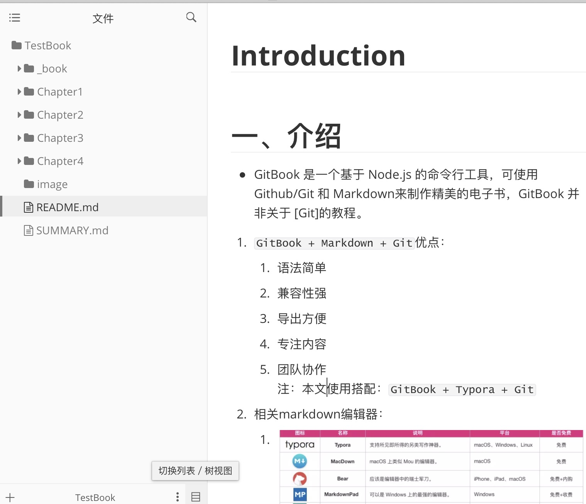
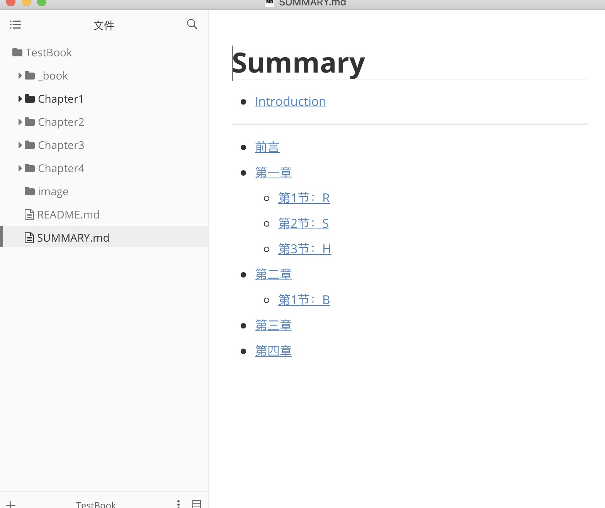

Introduction
一、介绍
GitBook 是一个基于 Node.js 的命令行工具，可使用 Github/Git 和 Markdown来制作精美的电子书，GitBook 并非关于 [Git]的教程。
GitBook + Markdown + Git优点：- 语法简单
- 兼容性强
- 导出方便
- 专注内容
- 团队协作
注：本文使用搭配：
GitBook + Typora + Git
相关markdown编辑器：
二、安装
全局安装gitbook-cli
npm i -g gitbook-cli安装软件：Git、Typora
三、使用
新建TestBook文件夹，初始化：gitbook init
README.md —— 书籍的介绍写在这个文件里 SUMMARY.md —— 书籍的目录结构在这里配置启动Typora编辑器，引入文件夹
- 
编辑SUMMARY.md
# 目录 * [前言](README.md) * [第一章](Chapter1/README.md) * [第1节：衣](Chapter1/衣.md) * [第2节：食](Chapter1/食.md) * [第3节：住](Chapter1/住.md) * [第4节：行](Chapter1/行.md) * [第二章](Chapter2/README.md) * [第三章](Chapter3/README.md) * [第四章](Chapter4/README.md)再次执行gitbook init，生成新目录结构
- 
浏览器浏览：gitbook serve
- 执行 gitbook serve 来预览这本书籍，执行命令后会对 Markdown 格式的文档进行转换，默认转换为 html 格式，最后提示 “Serving book on http://localhost:4000”
构建书籍：gitbook build
- 默认：将生成的静态网站输出到 _book 目录
- 指定路径：gitbook build [书籍路径] [输出路径]
- 指定端口：gitbook serve --port 2333
- 生成pdf格式：gitbook pdf ./ ./mybook.pdf
- 生成epub格式：gitbook epub ./ ./mybook.epub
- 生成 mobi 格式：gitbook mobi ./ ./mybook.mobi
注意：如果生成不了，你可能还需要安装一些工具，比如 calibre、ebook-convert，或者在 Typora 中安装 Pandoc 进行导出。
四、用 Git 做版本管理
- 在远端建好git仓库，在 mybook 目录下执行 git init 初始化仓库，执行 git remote add 添加远程仓库。接着就可以愉快地 commit，push，pull …